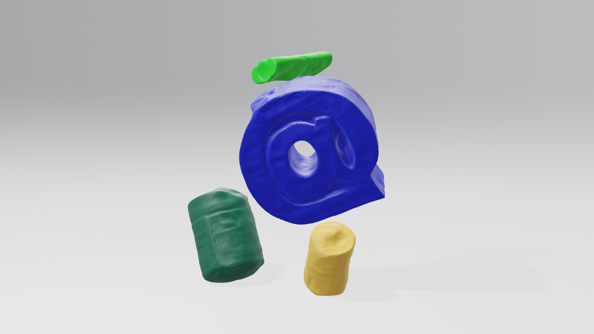
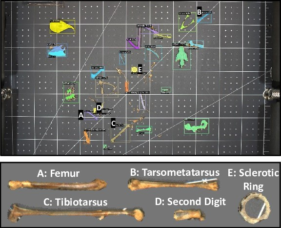
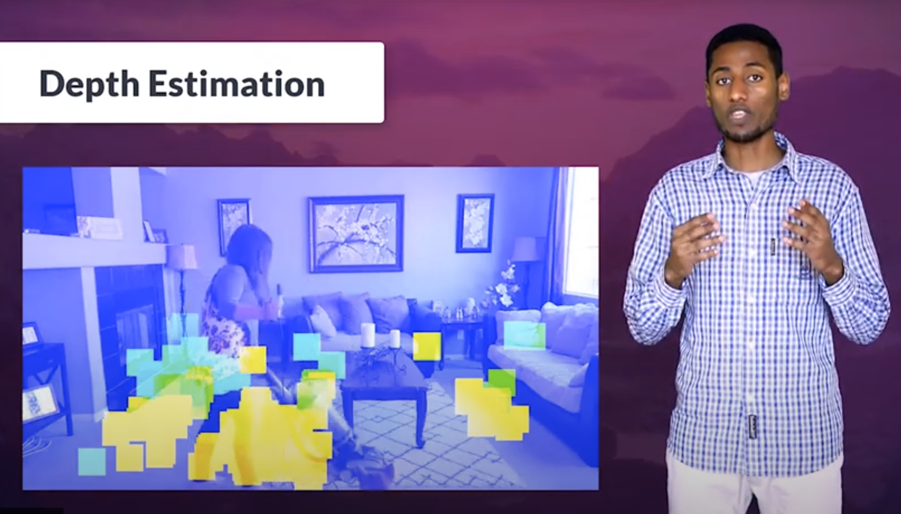
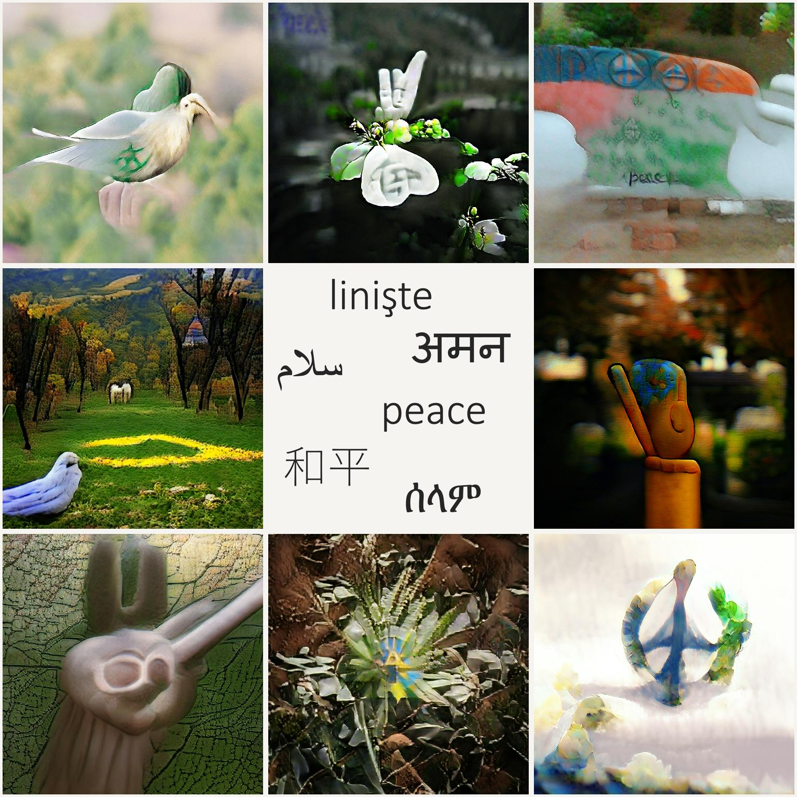
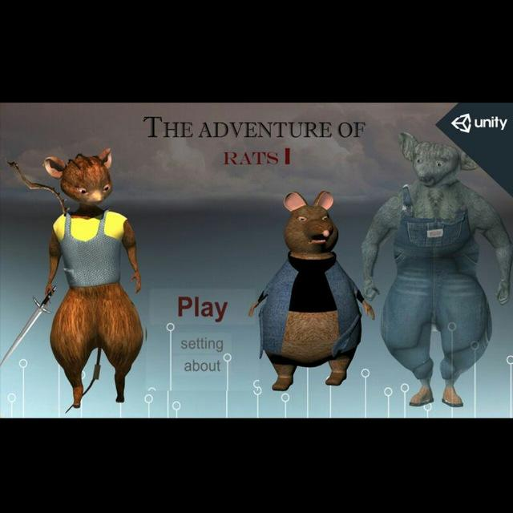
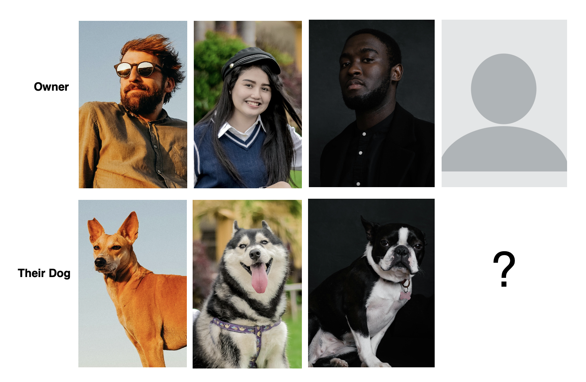

I am a CS PhD student at Cornell University working in the intersection of Machine Learning, Computer Vision and Graphics, advised by Prof. Bharath Hariharan and Prof. Steve Marschner. My research focuses on recovering the geometry and material properties of the 3D world directly from visual data in unconstrained capture settings. Prior to Cornell I earned my Bachelor's in Software Engineering from Addis Ababa University, Ethiopia. I have worked as a research intern at Ecole Polytechnique with Prof. Maks Ovsjanikov and at the University of Michigan with Prof. David Fouhey on computer vision, graphics and machine learning projects.
News
Research

ObjectCarver: Semi-automatic segmentation, reconstruction and separation of 3D objects
3DV 2025
Given multi-view images and point clicks in a single view, ObjectCarver generates a mask, propagates it to other views, reconstructs the 3D surface, and separates individual objects in the scene.
project page arXiv
Projects

Scene understanding using humans as a ruler
AURA 2020
Monocular depth estimation using people's height as a reference to estimate depth and floor of a scene.
Video
Expanding Horizons: Visual Indeterminacy as A Vehicle For Inquiry and New Connections
Collaboration 2021
Website
The adventure of rats
Individual 2018
Developed a 3D game with Unity engine.
Others

What is your dog likelihood?
SIGBOVIK 2024
We train and evaluate a system to predict dog likelihood based on a human face using facial recognition models.
PDFTalks
Teaching
Awards
Service
![[photo]](images/twitter_ceo.jpg){kind=link}